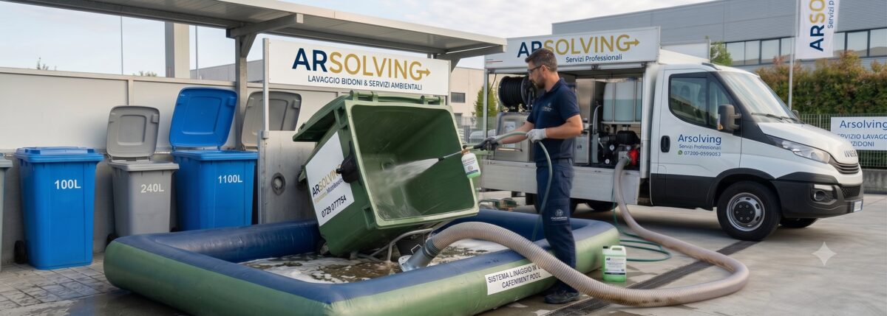

Cassonetti e aree di conferimento del retro-negozio accumulano percolato, sporco e odori. Laviamo e sanifichiamo ad alta pressione contenitori, cassonetti e l'intera isola ecologica del punto vendita, con acque di lavaggio recuperate a ciclo chiuso e prodotti enzimatici biodegradabili.

Aree di conferimento in ordine
Pavimento, pareti e contenitori sgrassati e sanificati ad alta pressione. Decoro e igiene anche nelle zone di carico e scarico.
Conforme alle normative ambientali
Prodotti biodegradabili, recupero delle acque di lavaggio e procedure tracciate: documentazione utile per audit e controlli interni.
Zero impatto sull'operatività
Interveniamo negli orari concordati, senza interferire con ricevimento merci e attività del punto vendita. Non serve presenza del personale.
Piano multi-punto vendita
Calendario ricorrente settimanale, quindicinale o mensile, per il singolo store o per l'intera rete, con un unico referente.
Piccolo formato
Grande formato / cassonetto
Lavaggio ad alta pressione + sanificazione di pavimento, pareti e contenitori
Per servizi periodici e reti di punti vendita prepariamo un preventivo dedicato con tariffe agevolate.